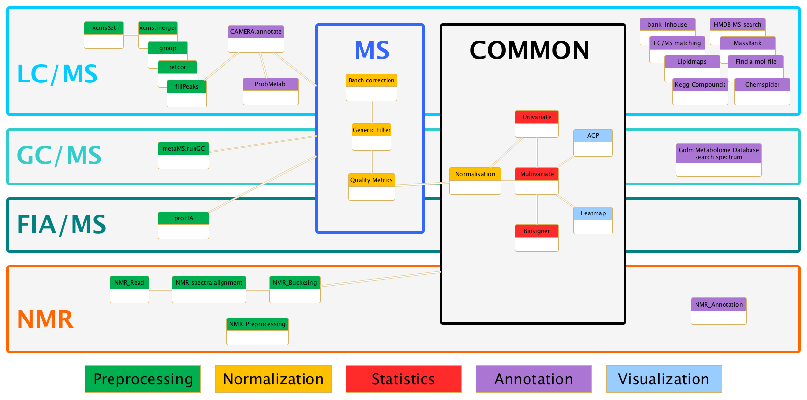

Galaxy is an open, web-based platform for data intensive biomedical research. The Galaxy team is a part of BX at Penn State, and the Biology and Mathematics and Computer Science departments at Emory University. The Galaxy Project is supported in part by NHGRI, NSF, The Huck Institutes of the Life Sciences, The Institute for CyberScience at Penn State, and Emory University.